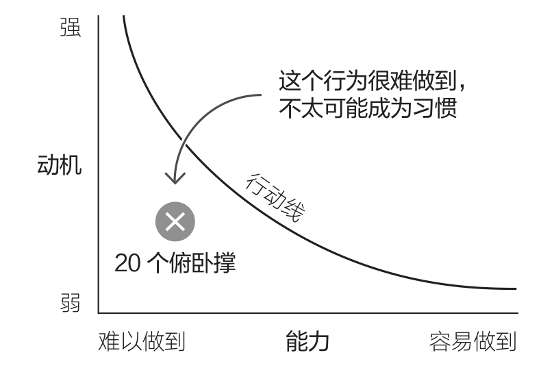
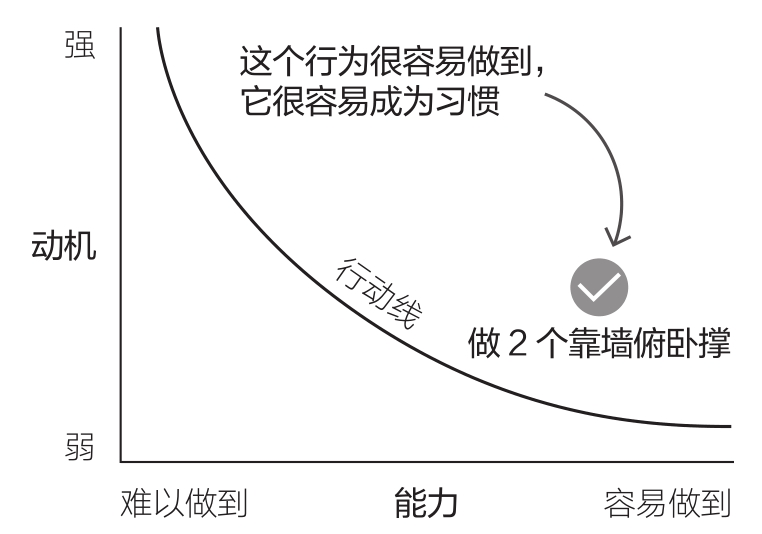
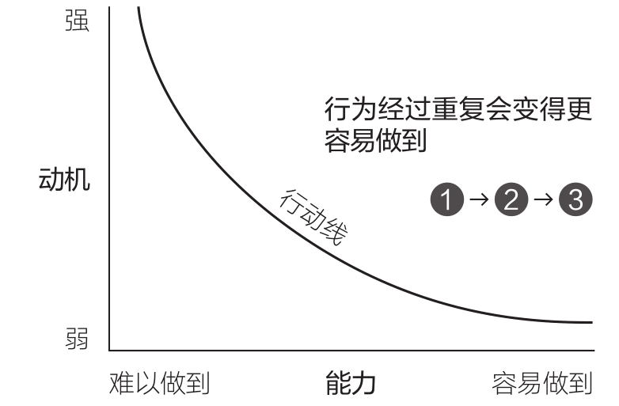
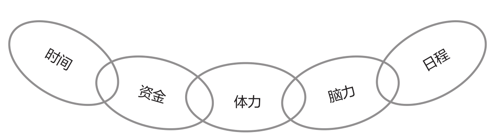
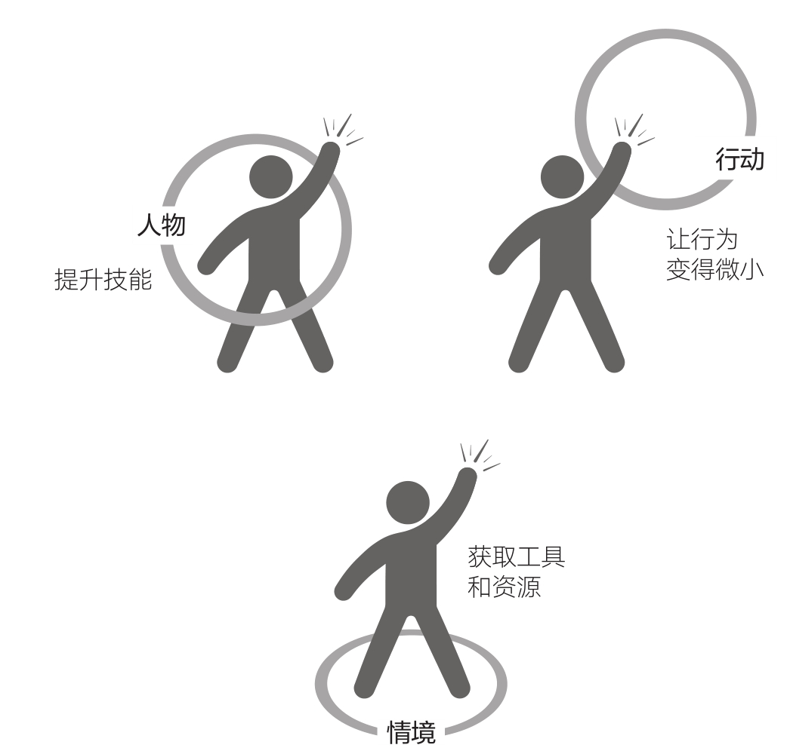
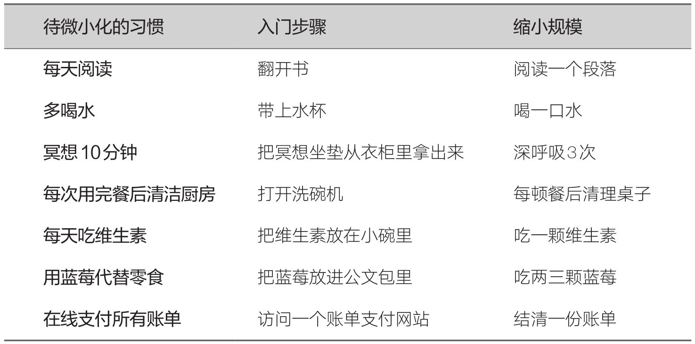

03 · 让行为简单到不可能失败——能力是习惯的基石
上一篇我们聊了动机猴子，你给自己做了行为集群和焦点地图，找到了黄金行为的方向。但你在 Q3 里说了一句关键的话——"惯常程度"是你放弃行为最常见的卡点。不适应，没形成系统，做着做着就断了。
这章就是来治这个病的。
福格行为模型的第二个要素——能力（Ability）——是维持习惯最可靠的变量。动机是猴子，爬上去跳下来；能力是你脚下的土地，稳不稳看你怎么修。
为什么能力比动机重要一万倍
福格研究了二十多年，得出一个结论：能力是维持习惯最可靠的要素。
来看一张图。假设你想每天做 20 个俯卧撑。

在一天当中，做 20 个俯卧撑的动机大多数时候很弱；行为能力也不高——对大多数人来说这很难。动机和能力都不高，行为位于行动线下方，几乎不可能发生。
但如果只是 做 2 个靠墙俯卧撑 呢？

动机还是那些动机——早上不想动、晚上不想动、加班完更不想动——但能力被拉到了横轴的最右侧。哪怕动机在最低点，行为依然稳稳地落在行动线之上。
这就是微习惯策略的核心：把行为拆解到极小，即使没有动机也能做到。
而且还有更厉害的——一旦你连续几周每天做 2 个靠墙俯卧撑，这个行为会变得越来越容易。肌肉力量提高了，身体更灵活了，技巧也更熟练——它在行为模型的横轴上会自动向右移。

你不用天天跟自己斗争。你做了一件简单到不可能失败的事，成功的感觉会推着你明天继续做。
五个因素，哪个在卡你
福格提出了一个叫"能力链"的概念。任何一个行为，能不能做到，取决于五个因素：
- 时间 — 你有足够的时间吗？
- 资金 — 你有足够的钱吗？
- 体力 — 你有足够的体力吗？
- 脑力 — 这个行为需要很多创意或脑力吗？
- 日程 — 这个行为符合你现在的日程吗？

能力链的强度等于其中最薄弱的一环。 任何一个环节断了，整个行为就断了。
福格讲了他自己用牙线的故事。他每次看完牙医都会被责备没用牙线，但就是做不到。他用能力链分析了这件事：
- 时间？只要几秒，没问题。
- 资金？很便宜，没问题。
- 脑力？已经知道怎么做了，没问题。
- 日程？可以融入每天早上，没问题。
- 体力？ 问题来了——他的牙齿排列非常紧密，牙线塞进去要用力，拔出来也要用力，感觉牙都要被拔掉了。牙线还常常断在牙缝里。体力这一环极其薄弱。
答案不是"增加动机"——牙医已经反复告诉他不洁牙会蛀牙了。答案是找到更细更滑的牙线。在试过 15 种牙线之后，他终于找到了适合的那一款。
你上次说"惯常程度"是你放弃行为最常见的卡点。我们来翻译一下——"惯常程度"对应的就是能力链里的日程 + 体力 + 脑力。"不适应"就是没找到合适的时间槽，"没形成系统"就是脑力消耗太大（每次都要想什么时候做、怎么做）。
让行为变简单的三种方法
福格说有三种方法可以让行为更容易做到：

1. 提升技能
你擅长的事自然容易做。上网查、问朋友、参加培训、反复练习都可以。如果你刚开始做俯卧撑，趁动机高涨的时候（比如刚读完这章）——立刻上网搜"标准俯卧撑动作"看一遍。这就是一次性动作，但能让后面的行为容易得多。
2. 获取工具和资源
这是福格的学生莫莉的故事。她想每天带午饭，但做饭太难了——买菜、切菜、炒菜、洗碗，一套流程下来要五小时。她能力链里断的是时间和体力。后来她发现了一个工具：切片器。10 秒切完一根胡萝卜，不用切菜板，直接切进碗里。烹饪时间减半。
你 Q3 里说喝可乐是"最简单"的减压方式。为什么？因为买一瓶可乐只需要 3 秒——能力门槛几乎为零。切片器的道理一样：把工具准备好，让正确的事变得比可乐还容易拿到。
3. 让行为变得微小
这是微习惯策略的基石。又分两种：
入门步骤——只做第一步。想健步走？入门步骤是"穿上运动鞋"就够了。想自己做早餐？入门步骤是"打开燃气灶"就可以了。福格的学生萨里卡用这个方法养成了做早餐的习惯——最开始每天只做一件事：打开燃气灶，空烧几分钟再关掉。没多久，她就想"水都烧了，为什么不煮粥？"——习惯自己长大了。
缩小规模——把理想行为缩到极小。福格用牙线的理想是"清洁所有牙齿"，但他把规模缩到"清洁一颗牙齿"。每天刷完牙后只清洁一颗。两个多星期后，他就开始隔一天清洁全部牙齿了。

两种方式的共同点：不要过早提高标准。 如果今天真的不想健步走，穿上运动鞋就脱掉——也完全没问题。把标准定到低得不可能失败，动机猴子就无从下手。
一套"让事情变简单"的操作流程
福格设计了一套简单的流程，适用于任何你想培养的习惯：
第一步：诊断。 问自己——"是什么让这个行为难以做到？"用能力链找最薄弱环节。
第二步：设计。 问自己——"怎样才能让这个行为变得更容易做到？"按顺序检查：
1. 我有足够的动机去学新技能吗？→ 有就去学。
2. 我有足够的动机去获取工具/资源吗？→ 有就去买、去找。
3. 我能缩小这个行为的规模吗？→ 能，就从极小版开始。
4. 我能找到入门步骤吗？→ 能，就从第一步开始。
如果四个问题的答案都是"不能"，回到上一章的行为集群，重新选一个黄金行为。
关于拖延——一句额外的提醒
福格在章末写了一段关于拖延的话，值得单独拎出来：
对困难的感知，和实际的困难程度一样重要。一件事只要一天没完成，就会让你多惦记一天，而且会让你感觉它越来越难。
他预约看牙医拖了很久。入门步骤是什么？把牙医电话写在便利贴上，贴在手机上。他只要求自己做这一件事。写完电话号码之后，大脑被激活了——他拿起手机拨出了号码。
你上次在 Q1 里说"拍短视频"中断的原因之一是没有系统。"没有系统"在能力链里就是脑力那一环——每次都要重新想、重新决定、重新启动。入门步骤可以解决这个问题：把"拍一条短视频"缩成"打开手机相机"，缩成"把手机支架拿出来"。做完了就算成功。大多数时候，你会接着做下去。
这一章的核心，三句话
- 能力是维持习惯最可靠的要素。 动机不可靠，能力很可靠。把行为拆解到动机最弱的时候也能做，习惯就扎根了。
- 用能力链诊断卡点。 时间、资金、体力、脑力、日程——找到最薄弱的环节，加固它，而不是责怪自己缺意志力。
- 让行为变小的两种方式：入门步骤 + 缩小规模。 标准低到不可能失败，动机猴子就没有机会捣乱。
下一篇是福格行为模型的第三个要素：提示（Prompt）。行为要发生，光有动机和能力还不够——你需要一个信号告诉你"现在该做了"。提示就是那个信号。下一篇里你会学到怎么用一个你已经有的习惯来"锚定"一个新习惯——福格说这是整个微习惯系统里最巧妙的技巧。
学习反馈
在飞书中回复本条消息，填写你的答复。